Tufts: missing teeth, patient-mean over 32 Universal teeth (n=100). DENTEX: abnormal teeth, patient-mean over 32 FDI teeth (val n=50). CoT is partial (2/4 models).
| Dataset | Task | Model | Strategy | Cases | Aggregation | F1 | Precision | Recall | Specificity | Accuracy | Mean_pred_per_case | Mean_GT_per_case | Sec_per_case | Status |
|---|---|---|---|---|---|---|---|---|---|---|---|---|---|---|
| Tufts | missing_teeth | LLaVA-1.5-7B | zero_shot | 100 | patient_mean_of_32tooth | 0.042 | 0.127 | 0.039 | 0.873 | 0.722 | 3.08 | 6.63 | 3.438 | ok |
| Tufts | missing_teeth | LLaVA-Med-v1.5-7B | zero_shot | 100 | patient_mean_of_32tooth | 0.052 | 0.082 | 0.047 | 0.921 | 0.772 | 1.80 | 6.63 | 4.055 | ok |
| Tufts | missing_teeth | HuatuoGPT-Vision-7B | zero_shot | 100 | patient_mean_of_32tooth | 0.188 | 0.216 | 0.228 | 0.706 | 0.646 | 8.83 | 6.63 | 9.317 | ok |
| Tufts | missing_teeth | DentVLM | zero_shot | 100 | patient_mean_of_32tooth | 0.018 | 0.018 | 0.026 | 0.942 | 0.782 | 1.00 | 6.63 | 11.699 | ok |
| Tufts | missing_teeth | LLaVA-1.5-7B | few_shot | 100 | patient_mean_of_32tooth | 0.185 | 0.264 | 0.174 | 0.793 | 0.701 | 5.98 | 6.63 | 5.250 | ok |
| Tufts | missing_teeth | LLaVA-Med-v1.5-7B | few_shot | 100 | patient_mean_of_32tooth | 0.073 | 0.103 | 0.074 | 0.910 | 0.769 | 2.35 | 6.63 | 3.660 | ok |
| Tufts | missing_teeth | HuatuoGPT-Vision-7B | few_shot | 100 | patient_mean_of_32tooth | 0.199 | 0.200 | 0.288 | 0.658 | 0.618 | 10.51 | 6.63 | 5.132 | ok |
| Tufts | missing_teeth | DentVLM | few_shot | 100 | patient_mean_of_32tooth | 0.000 | 0.000 | 0.000 | 0.970 | 0.793 | 0.00 | 6.63 | 5.569 | ok |
| Tufts | missing_teeth | LLaVA-1.5-7B | cot | 100 | patient_mean_of_32tooth | 0.070 | 0.204 | 0.060 | 0.900 | 0.746 | 2.32 | 6.63 | 19.862 | ok |
| Tufts | missing_teeth | LLaVA-Med-v1.5-7B | cot | 100 | patient_mean_of_32tooth | 0.009 | 0.012 | 0.008 | 0.960 | 0.786 | 0.29 | 6.63 | 7.037 | ok |
| DENTEX | abnormal_tooth | LLaVA-1.5-7B | zero_shot | 50 | patient_mean_of_32fdi | 0.076 | 0.110 | 0.070 | 0.945 | 0.848 | 1.80 | 3.58 | 13.200 | ok |
| DENTEX | abnormal_tooth | LLaVA-Med-v1.5-7B | zero_shot | 50 | patient_mean_of_32fdi | 0.000 | 0.000 | 0.000 | 1.000 | 0.888 | 0.00 | 3.58 | 1.210 | ok |
| DENTEX | abnormal_tooth | HuatuoGPT-Vision-7B | zero_shot | 50 | patient_mean_of_32fdi | 0.052 | 0.067 | 0.051 | 0.949 | 0.849 | 1.60 | 3.58 | 32.906 | ok |
| DENTEX | abnormal_tooth | DentVLM | zero_shot | 50 | patient_mean_of_32fdi | 0.000 | 0.000 | 0.000 | 1.000 | 0.888 | 0.00 | 3.58 | 104.794 | ok |
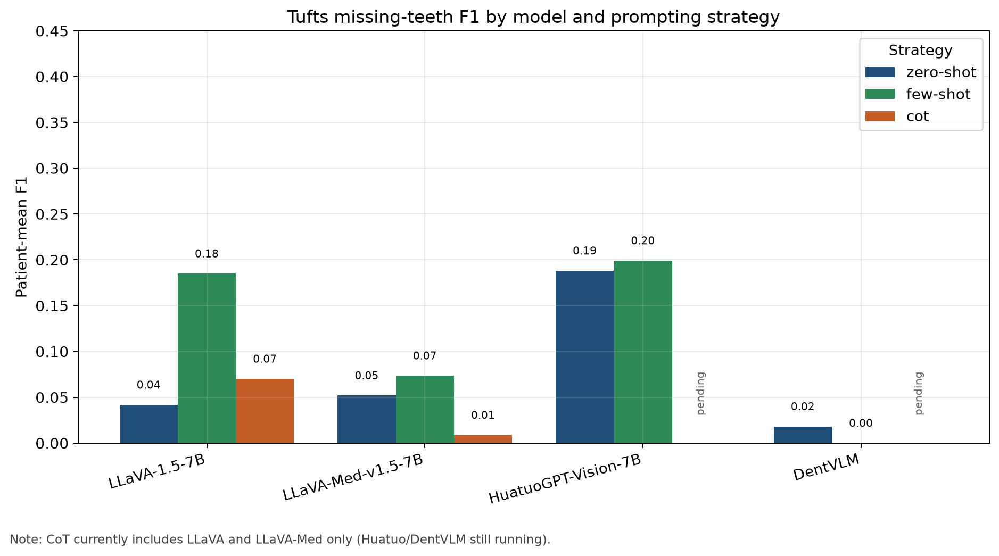
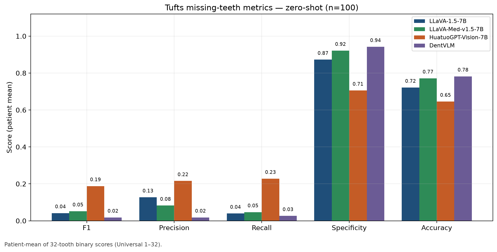
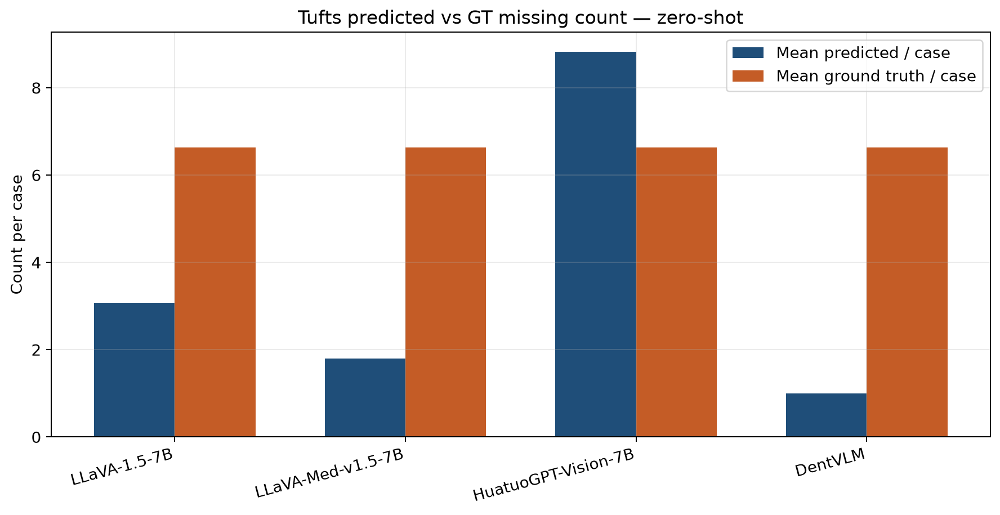
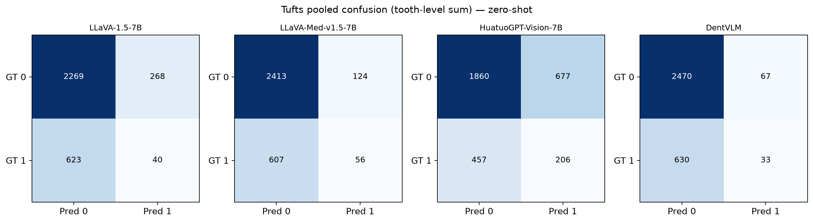
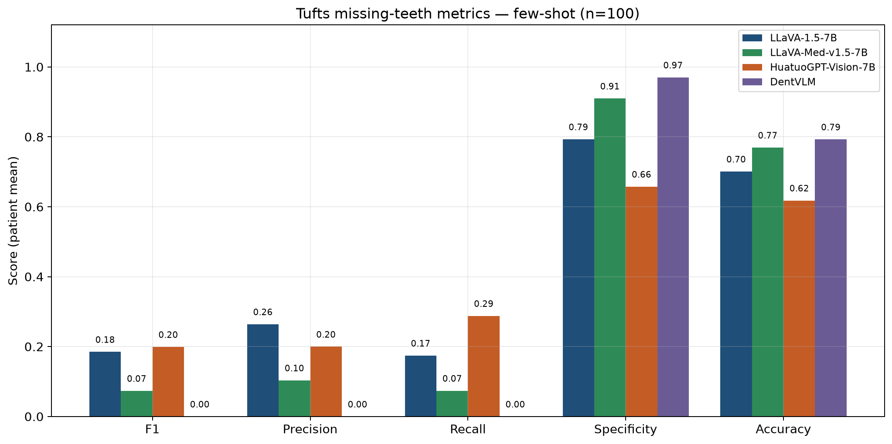
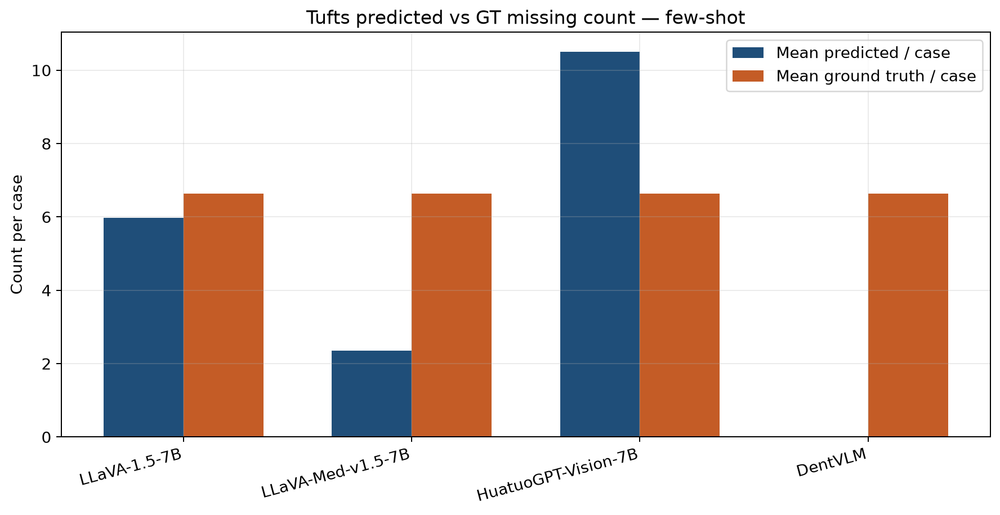
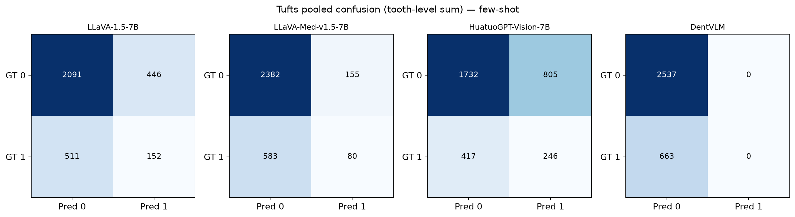
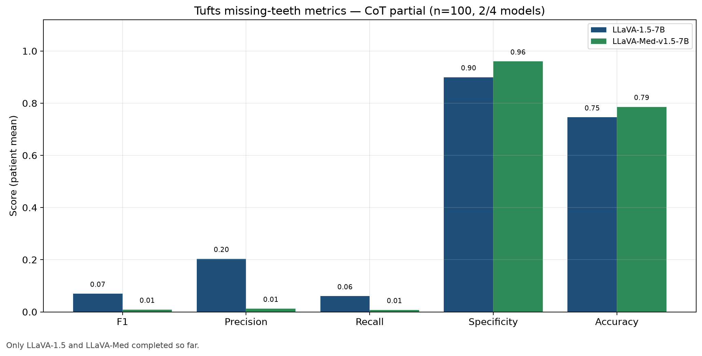
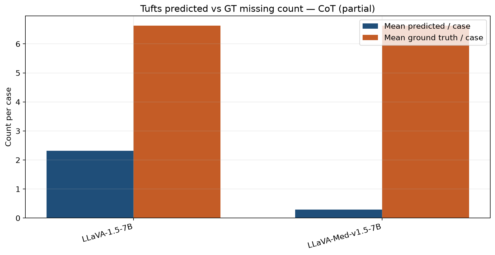
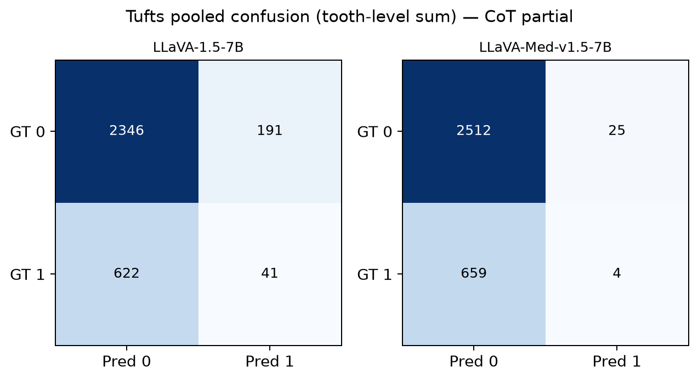
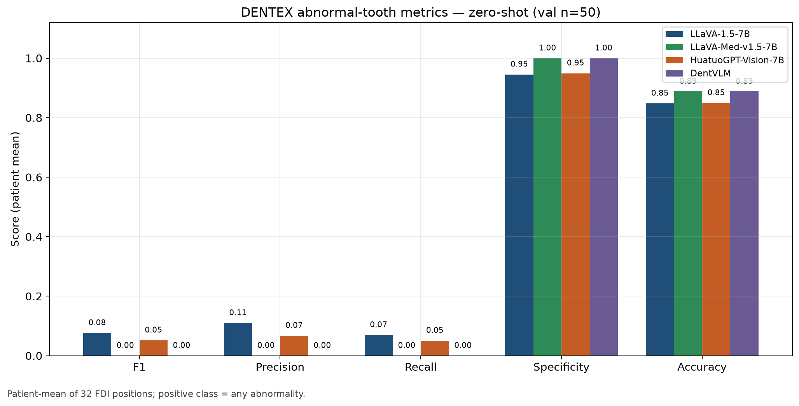
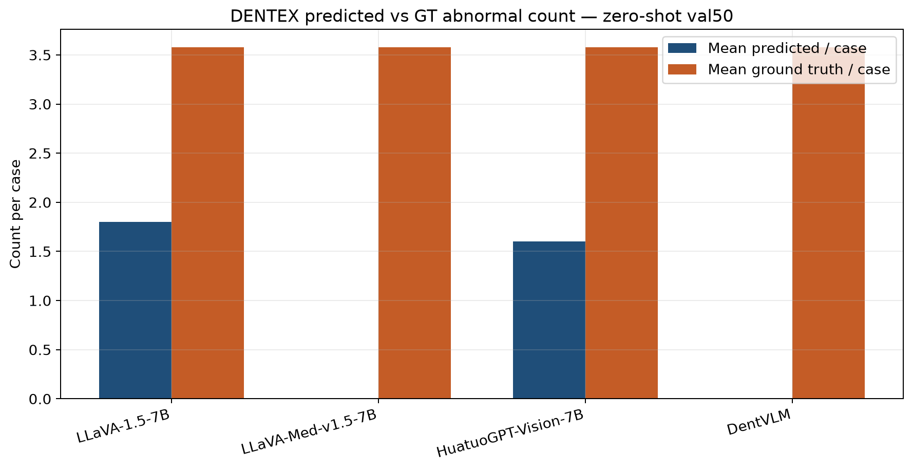
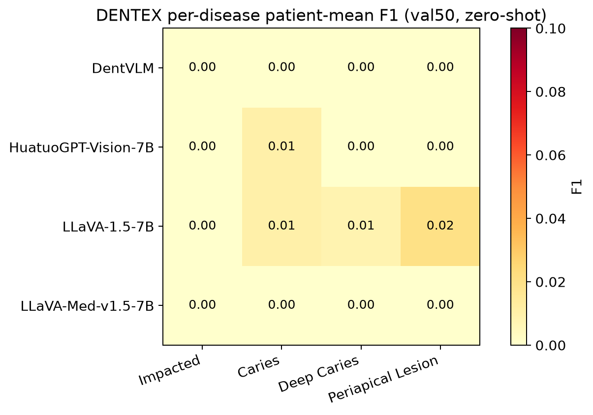
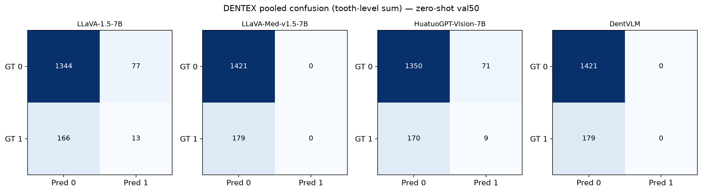